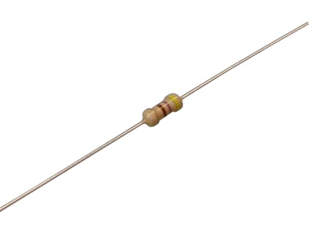
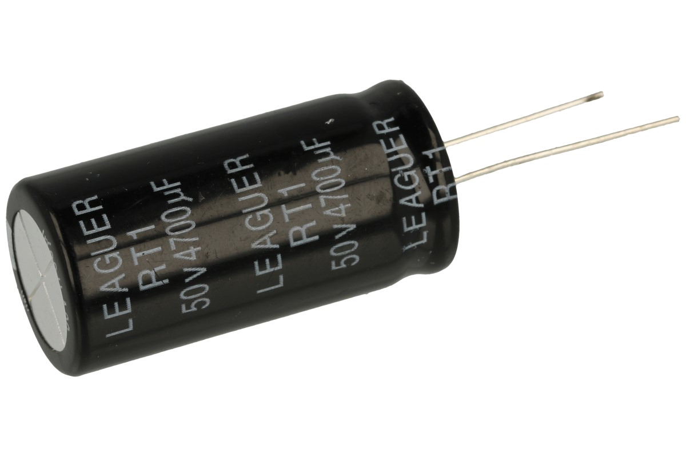
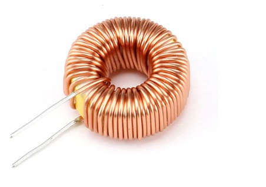
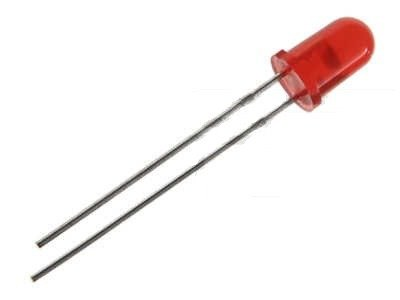
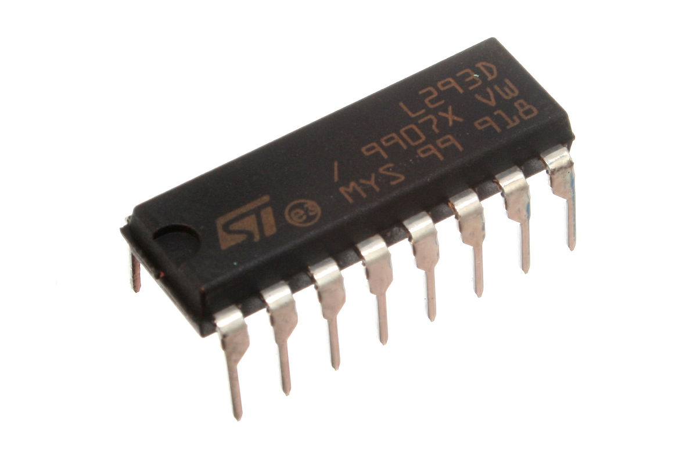
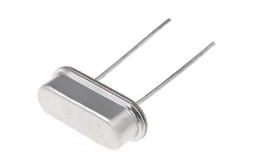

ELEMENTY ELEKTRONICZNE
Elementy elektroniczne są wykonane z różnych materiałów i według różnych technologii, stąd mają różne właściwości i zastosowania. W układach elektronicznych występują:
Elementy bierne: rezystory, kondensatory, cewki i transformatory
Elementy czynne: diody, tranzystory, układy scalone
REZYSTOR
Dzieli się w zależności od charakterystyki prądowo-napięciowej. Wyróżnia się rezystory liniowe (wtedy, gdy prąd płynący przez taki rezystor jest wprost proporcjonalny do występującego na nim spadku napięcia) i nieliniowe.
Służą do ograniczania prądu płynącego w określonych gałęziach obwodu oraz do ustalania odpowiednich spadków napięcia. Parametrem rezystora jest rezystancja, oznaczana literą R, która wyraża się w omach (𝜴)
KONDENSATOR
element pojemnościowy obwodu elektrycznego, jest zbudowany z dwóch przewodników (okładzin), rozdzielonych warstwą dielektryka.
Dzieli się je ze względu na przeznaczenie oraz zastosowanie dielekryka
CEWKA
element indukcyjny obwodu elektrycznego, składa się z pewnej liczby zwojów drutu przewodzącego. Zwoje są nawinięte (np. jeden obok drugiego) na powierzchni walca (cewka cylindryczna) lub na powierzchni pierścienia (cewka toroidalna).
Ze względu na sposób nawinięcia zwojów cewki można także podzielić na jednowarstwowe i wielowarstwowe Parametrem cewki jest indukcyjność, oznaczana literą L, którą wyraża się w henrach (H)
TRANSFORMATOR
składa się z dwóch sprzężonych magnetycznie cewek nawiniętych na wspólny rdzeń. Jedna tworzy uzwojenie pierwotne, druga - uzwojenie wtórne. Transformatory są używane przede wszystkim do zamiany (zmniejszania lub zwiększania) napięcia w obwodach prądu zmiennego
TRANSFORMATORY DZIELIMY NA:
Transformatory energetyczne umożliwiające zmianę napięcia występującego w sieciach wysokiego napięcia (służących do przesyłania energii elektrycznej na duże odległości) na niskie napięcie, do którego są dostosowane poszczególne odbiorniki)
Transformatory małej mocy stosowane m.in. w urządzeniach elektrycznych i elektronicznych, w automatyce
Transformatory specjalne przeznaczone do różnych zastosowań specjalnych (np. przekładniki pomiarowe).
DIODA
dwuzaciskowy element elektroniczny zbudowany ze złącza półprzewodnikowego p-n lub złącza metal-półprzewodnik. Zależność prądu płynącego przez diodę od przyłożonego do jej zacisków napięcia jest nieliniowa
RODZAJE DIÓD
Dioda świecąca (LED): emitujące promieniowanie w zakresie światła widzialnego i podczerwieni, są używane w sprzęcie elektronicznym m.in. jako wskaźniki świetlne lub wyświetlacze numeryczne oraz nadajniki promieniowania podczerwonego.
Dioda prostownicza: przeznaczona głównie do prostowania prądu przemiennego, jej główną cechą jest możliwość przewodzenia prądu o dużym natężeniu.
Fotodioda: reagujące na promieniowanie świetlne, wykorzystuje się m.in. w detektorach światła widzialnego i podczerwonego, miernikach odległości, komunikacji światłowodowej.
TRANZYSTOR
Tranzystor to trójzaciskowy półprzewodnikowy element elektroniczny służący do wzmacniania sygnałów elektrycznych. Istnieją tranzystory bipolarne i polowe.

UKŁAD SCALONY
to zminiaturyzowany układ elektroniczny, zawierający od setek do milionów podstawowych elementów elektronicznych, głównie tranzystorów i diod. Oparte na układach scalonych stanowią podstawę techniki komputerowej. Są stosowane również w automatyce, urządzeniach pomiarowych itp.
REZONATOR KWARCOWY
to element elektroniczny wykonany z kryształu kwarcu. Jego działanie opiera się na zjawisku piezoelektrycznym. Rezonator służy do stabilizacji drgań generatorów elektronicznych
